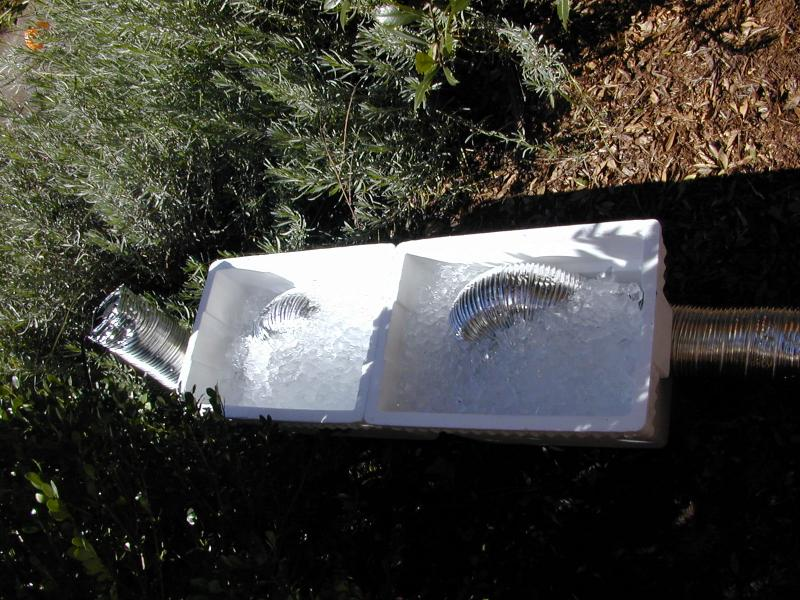
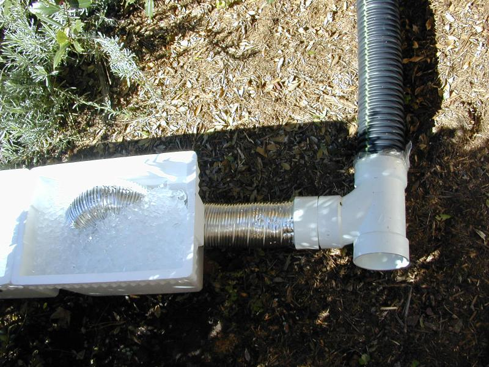

This is the fog chiller, filled with wet ice. The fan at the left pulls in air, which cools while it travels through the aluminum flex.

The chilled air travels out of the aluminum flex into a PVC joint. The fog machine injects fog directly into the PVC joint, and the fog mixes with the chilled air as it travels through the black flex.
This is fairly complex. In 2004, we tried two additional ways to chill fog:
In 2005, we'll try about 10 feet of 6" dryer duct (the silvery flexible kind) filled with ice. As well as the use of more than one cuvert.
